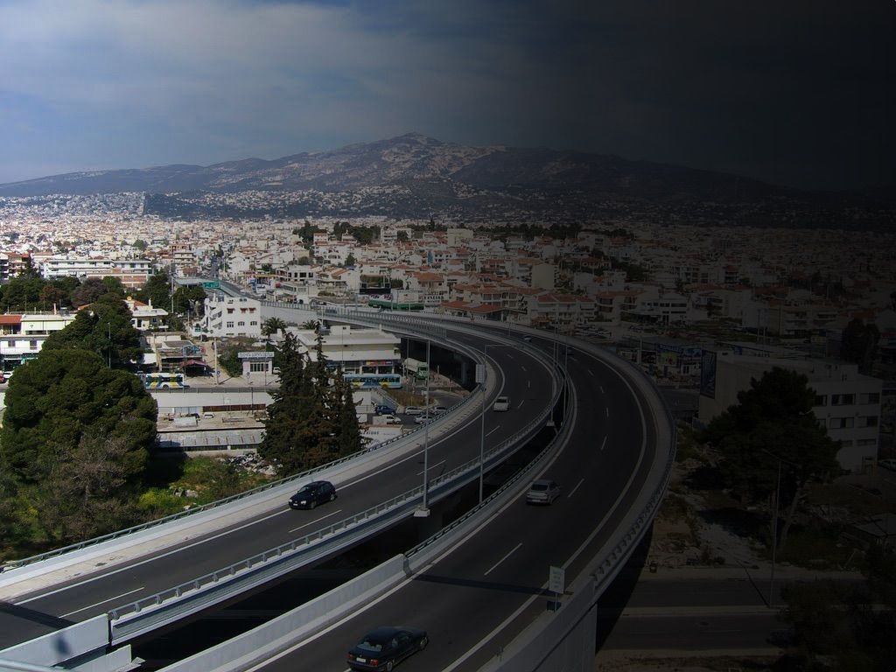

<!DOCTYPE html>
<html>
  <head>
    <meta charset="utf-8">
    <title>Ελληνική Ευαγγελική Εκκλησία Αγίας Παρασκευής</title>
    <meta name="viewport" content="width=device-width">
    <link rel="stylesheet" href="main.css">
    <link href="http://fonts.googleapis.com/css?family=Fira+Sans:300,400,700,300italic,400italic,700italic&amp;subset=latin,greek" rel="stylesheet" type="text/css">
    <link href="http://fonts.googleapis.com/css?family=Noto+Serif:400,400italic&amp;subset=latin,greek" rel="stylesheet" type="text/css">
  </head>
</html>
<body class="page-home">
  <div class="site-width">
    <nav class="nav-mobile"><a href="#0" class="menu-mobile__reveal">MENU</a>
      <ul class="menu-mobile">
        <li> <a href="index.html">Αρχική</a></li>
        <li><a href="#0">Εκκλησία</a></li>
        <li><a href="#0">Άρθρα</a></li>
        <li><a href="#0">Πρόγραμμα</a></li>
        <li><a href="#0">Επικοινωνία</a></li>
      </ul>
    </nav>
    <header class="header-home">
      <nav class="nav-home">
        <ul class="menu-home">
          <li> <a href="index.html">Αρχική</a></li>
          <li><a href="#0">Εκκλησία</a></li>
          <li><a href="#0">Άρθρα</a></li>
          <li><a href="#0">Πρόγραμμα</a></li>
          <li><a href="#0">Επικοινωνία</a></li>
        </ul>
      </nav>
    </header>
    <main class="content-main content-main--home">
      <figure class="home-logo"></figure>
      <section class="home-intro">
        <div class="home-intro__content">
          <blockquote> Μέσα στην καρδιά της πόλης, η Ευαγγελική Εκκλησία της Αγίας Παρασκευής είναι ένα περιβάλλον ανοιχτό για όλους: πιστούς και μη, κατασταλαγμένους και προβληματισμένους, θρησκευόμενους και αποστασιοποιημένους. Είναι μια κοινότητα που συγκροτείται γύρω από το ευαγγέλιο του Χριστού ρωτώντας κάθε φορά πώς αυτό αφορά εμάς, την καθημερινότητά μας, τις οικογένειές μας, τη γειτονιά μας, την πόλη μας.</blockquote>
        </div>
      </section>
      <article class="article-home"><!-- h1.article-home__heading Τελευταίο άρθρο: -->
        <div style="background:url(img/sample-1.jpg);" class="article-home__title">
          <h2>Ανατροφή των παιδιών: Βρίσκοντας χαρά στο ακατόρθωτο</h2>
        </div>
        <div class="article-home__content"><p>Ήταν Κυριακή, 11 το βράδυ, όταν έβγαινα από το πάρκινγκ του μίνι μάρκετ εξαντλημένος σωματικά και ψυχικά. Αφού βάλαμε τα τέσσερα παιδιά μας για ύπνο, πολύ αργότερα από ότι είχαμε σχεδιάσει, η Λουέλα ανακάλυψε ότι δεν είχαμε τίποτε στο σπίτι για να φάμε την επόμενη μέρα. Μπήκα στο αμάξι για να κάνω τα ψώνια και φυσικά μόνο χαρούμενος δεν ήμουν. Καθώς περίμενα να ανάψει το φανάρι του πάρκινγκ για να φύγω και να επιστρέψω σπίτι μου ξαφνικά το συνειδητοποίησα. Μου είχε ανατεθεί μια ακατόρθωτη δουλειά: να είμαι ο πατέρας τεσσάρων παιδιών.</p>
<p>Είναι ταπεινωτικό και λίγο ντροπιαστικό να το παραδεχτώ, αλλά κάθισα στο αυτοκίνητό μου και ονειρεύτηκα για λίγο πώς θα ήταν αν ήμουν ανύπαντρος. Όχι, δεν ήθελα να παρατήσω την γυναίκα μου και τα παιδιά μου, αλλά εκείνη την στιγμή το να είμαι γονιός μου φαινόταν ακατόρθωτο. Αισθανόμουν ότι δεν μου είχε απομείνει τίποτε, ώστε να μπορέσω την επόμενη μέρα να αντιμετωπίσω τους τσακωμούς, τις συγκρούσεις εξουσίας, τις υπενθυμίσεις, τις προειδοποιήσεις, τις διορθώσεις, τις στιγμές πειθαρχίας, τις εξηγήσεις, τις αναφορές στην παρουσία και την χάρη του Χριστού, τις φορές που θα βοηθούσα τα παιδιά μου να κοιτάξουν στον καθρέφτη του Λόγου του Θεού, ώστε να δουν τον εαυτό τους με ακρίβεια, τις “συγνώμες” και τα “σ’ αγαπώ”. Μου φαινόταν αδύνατο να είμαι πιστός σε αυτή τη “δουλειά” και να έχω ταυτόχρονα τον χρόνο και την ενέργεια για οτιδήποτε άλλο.</p>
<p>Τώρα αυτό μπορεί να φανεί αντιφατικό και εν μέρει παράλογο, αλλά εκείνη η στιγμή στο αυτοκίνητο δεν ήταν σκοτεινή και φρικτή. Όχι, ήταν μια πολύτιμη στιγμή χάρης. Εκείνο το βράδυ το φορτίο μου αντί να γίνει βαρύτερο, σηκώθηκε. Και σίγουρα δεν εννοώ ότι ξαφνικά το να είμαι πατέρας μου φάνηκε απλό και εύκολο. Κάτι όμως άλλαξε ριζικά εκείνο το βράδυ για το οποίο είμαι αιώνια ευγνώμων.</p>
<p>Δύο πράγματα έμαθα εκείνο το βράδυ που άλλαξαν την εμπειρία της πατρότητας για μένα.</p>
<h3>1. Συνειδητοποίησα το γεγονός ότι δεν έχω καμία απολύτως ικανότητα ώστε να αλλάξω τα παιδιά μου.</h3>

<p>Με τρόπους που δεν γνώριζα είχα φορτωθεί το βάρος της αλλαγής των παιδιών μου. Είχα πιστέψει ότι με την δύναμη της λογικής μου, την απειλή της πειθαρχίας μου, το ύφος μου, τον τόνο της φωνής μου, θα μπορούσα να αλλάξω την καρδιά των παιδιών μου, και αλλάζοντας την καρδιά τους να αλλάξω και την συμπεριφορά τους. Ξυπνούσα κάθε πρωί και προσπαθούσα να είμαι αυτόκλητος μεσσίας των παιδιών μου. Και όσο περισσότερο προσπαθούσα να κάνω κάτι το οποίο δεν μπορούσα να κάνω, τόσο οργιζόμουν, απογοητευόμουν και αποθαρρυνόμουν. Όλα ήταν χάλια. Ήμουν ποιμένας και όμως δεν μπορούσα να δω ότι με τον τρόπο που συμπεριφερόμουν ως πατέρας, αρνιόμουν το ευαγγέλιο που τόσο πιστά προσπαθούσα να κηρύξω κάθε Κυριακή. Στο σπίτι μου, καθώς προσπαθούσα να φέρω αύξηση και αλλαγή στα παιδιά μου, λειτουργούσα σαν να μην υπάρχει σχέδιο σωτηρίας, σαν να μην υπάρχει ο Χριστός, η θυσία του σταυρού, ο άδειος τάφος, σαν να μην υπάρχει το Άγιο Πνεύμα που ζει και ενεργεί μέσα μας. Εκείνο το βράδυ ο Θεός άνοιξε τα μάτια μου για να δω ότι ζητούσα από τον νόμο να κάνει εκείνο που μόνο η χάρη μπορεί να επιτύχει, και αυτό δεν θα έφερνε κανένα αποτέλεσμα ποτέ.</p>
<p>Άρχισα να καταλαβαίνω ότι αν το μόνο που χρειάζονταν τα παιδιά μου ήταν ένα σύστημα κανόνων και έναν γονιό να λειτουργεί σαν δικαστής, ένορκος και φύλακας, δεν θα χρειαζόταν να είχε έρθει ο Χριστός. Συνειδητοποίησα ότι οι ριζικές αλλαγές που έπρεπε να λάβουν χώρα στα βαθύτερα επίπεδα σκέψεων και πόθων των παιδιών μου, οι οποίες θα οδηγούσαν σε αλλαγή στην συμπεριφορά τους, θα γίνονταν μόνο μέσω της δυνατής, συγχωρητικής και μεταμορφωτικής χάρης του Κυρίου Ιησού Χριστού. Άρχισα να συνειδητοποιώ ότι ως γονιός δεν είχα κληθεί να είμαι αυτός που θα φέρει την αλλαγή, αλλά να είμαι ένα πρόθυμο εργαλείο στα δυνατά χέρια ενός Θεού που αυτός και μόνο έχει τη δύναμη και τη θέληση να μας γκρεμίσει και να μας ξαναχτίσει. Αλλά κατάλαβα και άλλο ένα πράγμα εκείνο το βράδυ.</p>
<h3>2. Συνειδητοποίησα ότι για να είμαι ένα εργαλείο χάρης, χρειάζομαι εγώ ο ίδιος απεγνωσμένα την χάρη.</h3>

<p>Σε μια στιγμή εξομολόγησης και απάρνησης των ψευδαισθήσεών μου για αυτονομία και αυτάρκεια, ήρθα αντιμέτωπος με τις αδυναμίες του χαρακτήρα μου, την έλλειψη σοφίας και δύναμης. Παραδέχτηκα στον Θεό και στον εαυτό μου ότι δεν έχω ό,τι χρειάζεται για να κάνω το έργο το οποίο κλήθηκα να κάνω. Δεν έχω την ατέλειωτη υπομονή, την πιστή επιμονή, την συνεχή αγάπη και την χάρη που χρειάζεται, ώστε να είμαι το όργανο που ο Θεός έθεσε στις ζωές των παιδιών μου. Και σε αυτή μου την παραδοχή, συνειδητοποίησα ότι τελικά είμαι πιο πολύ σαν τα παιδιά μου. Όπως και αυτά, είμαι εκ φύσεως ανεξάρτητος και αυτάρκης. Όπως και αυτά δεν αγαπώ πάντα την εξουσία και δεν εκτιμώ τη σοφία. Όπως και αυτά, συχνά θέλω να βάζω τους δικούς μου κανόνες και να εφαρμόζω τα δικά μου σχέδια. Όπως και αυτά, θέλω η ζωή μου να είναι προβλέψιμη, άνετη και εύκολη. Όπως και αυτά, βάζω τον εαυτό μου στο κέντρο της ζωής μου.</p>
<p>Συνειδητοποίησα ότι αν θέλω να είμαι όργανο της χάρης που φέρνει αλλαγή στη ζωή των παιδιών μου, χρειάζεται να σώζομαι καθημερινά, όχι από αυτά, αλλά από τον ίδιο μου τον εαυτό! Για αυτό ήρθε ο Χριστός, έτσι ώστε να έχω κάθε τι που χρειάζομαι, ώστε να είμαι αυτό που με έχει καλέσει να είμαι και να κάνω αυτό που με έχει καλέσει να κάνω. Στη ζωή, στον θάνατο και στην ανάστασή Του βρίσκω ό,τι χρειάζομαι, ώστε να είμαι όργανο της δικής του λυτρωτικής, συγχωρητικής και μεταμορφωτικής χάρης.</p>
<p>Εκείνο το βράδυ άρχισα να βρίσκω χαρά μέσα στο ακατόρθωτο της κλήσης μου. Το έργο που έχουμε μπροστά μας είναι πολύ μεγαλύτερο από ότι οι ικανότητές μας ως γονείς. Δεν είμαστε οι μεσσίες των παιδιών μας και δεν εξαρτόμαστε από τα δικά μας αποθέματα χαρακτήρα, σοφίας και δύναμης. Τα παιδιά μας έχουν Μεσσία. Αυτός είναι μαζί τους και εργάζεται μέσα τους και μέσα από εμάς. Ο σοφός ουράνιος Πατέρας εργάζεται για όλους μας και δεν θα καλέσει ούτε εμάς, αλλά ούτε και τα παιδιά μας, σε κάτι χωρίς να μας δώσει και ό,τι χρειαζόμαστε για να το πραγματοποιήσουμε.</p>
<p><em>Paul Tripp, μετάφραση: Σύνθια Λάνδρου-Coomar</em></p>

        </div>
      </article>
    </main>
  </div>
  <script src="https://code.jquery.com/jquery-2.1.3.min.js"></script>
  <script src="files/accents.js"></script>
  <script src="site.min.js"></script>
</body>